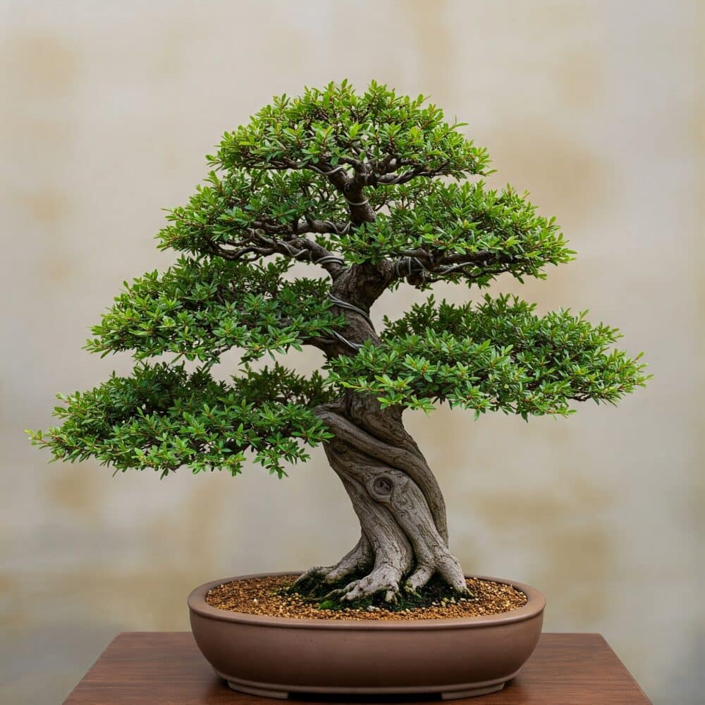

Bonsai Care Guide
Proper care is essential to maintaining a healthy and visually balanced bonsai tree. This guide outlines the foundational practices required to support growth, longevity, and aesthetic form.
Maintaining Tree Health
Bonsai care involves close attention to watering, light exposure, soil conditions, pruning, and seasonal changes. Because bonsai trees are grown in shallow containers, they rely entirely on the caretaker for consistent and informed maintenance.
Watering & Humidity
Watering is the most critical aspect of bonsai care. The soil should remain slightly moist but never oversaturated. Frequency depends on tree species, pot size, soil composition, and climate.
- Check soil moisture daily using your finger or a moisture probe.
- Water thoroughly until excess drains from the bottom of the pot.
- Avoid watering on a fixed schedule; respond to the tree’s needs instead.
- Indoor bonsai may benefit from misting to maintain humidity.

Light & Placement
Light requirements vary by species, but most bonsai trees thrive with bright, indirect sunlight. Placement plays a major role in leaf health and growth strength.
- Outdoor bonsai typically require several hours of sunlight daily.
- Indoor bonsai should be placed near bright windows.
- Rotate trees periodically to promote even growth.
- Protect bonsai from extreme heat, frost, and strong drafts.
Soil & Repotting
Bonsai soil must provide proper drainage, aeration, and nutrient retention. Over time, soil breaks down, making repotting essential for root health.
- Repot most bonsai every one to three years.
- Trim roots carefully to maintain size and encourage new growth.
- Use species-appropriate soil mixes with good drainage.
Pruning & Shaping
Pruning controls growth and maintains the intended shape of the tree. Wiring allows branches to be guided into position over time.
- Remove dead, weak, or overcrowded branches.
- Prune new growth regularly to preserve silhouette.
- Use wire carefully to avoid damaging bark.
- Remove wire before it cuts into growing branches.
Seasonal Care
Bonsai care changes with the seasons, reflecting the natural growth cycle of trees.
- Spring: Active growth, ideal for pruning and repotting.
- Summer: Monitor watering closely and protect from heat.
- Fall: Reduce fertilization and prepare for dormancy.
- Winter: Protect outdoor bonsai from frost; maintain humidity indoors.

Common Issues & Tender Loving Care (TLC)
Early identification of issues can prevent long-term damage.
- Yellowing leaves may indicate overwatering.
- Dry or brittle leaves often signal underwatering.
- Pests such as aphids or spider mites should be treated promptly.
- Slow growth may result from poor light or nutrient deficiency.